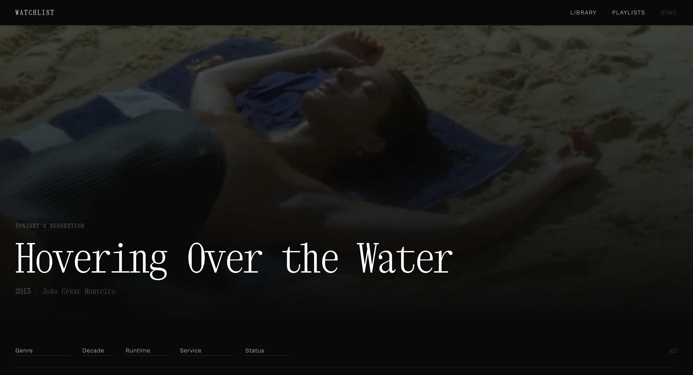
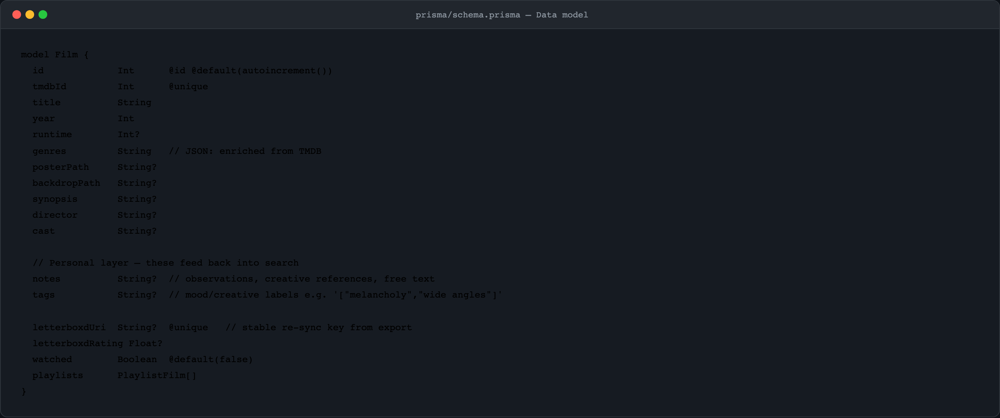
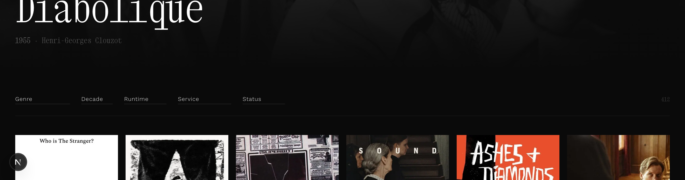
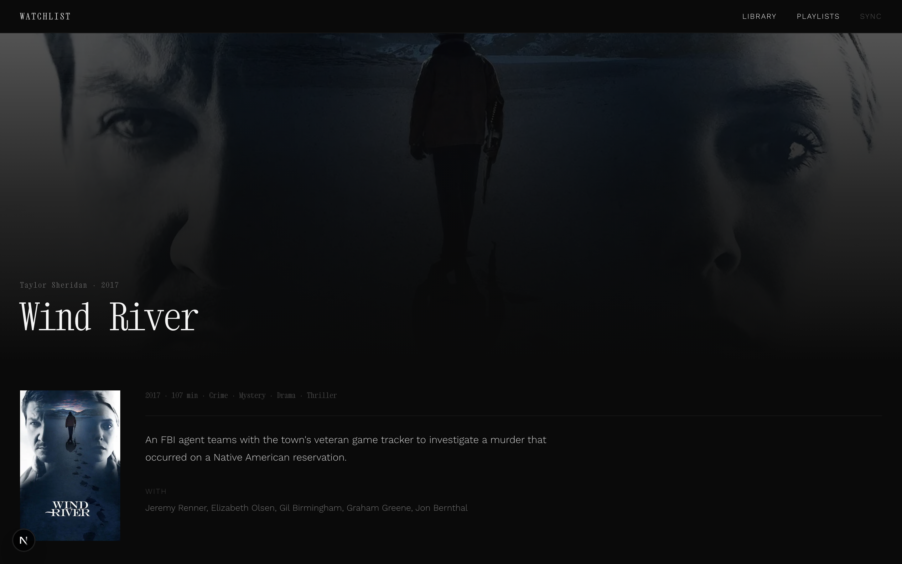
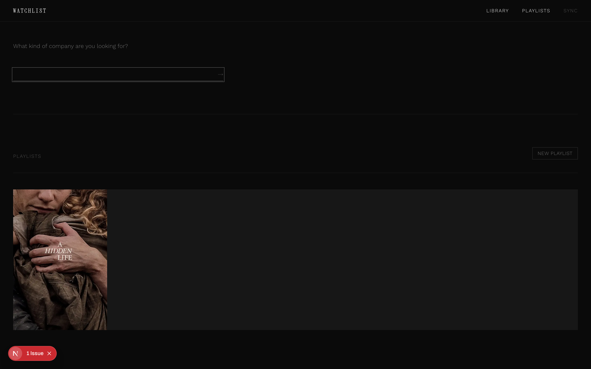
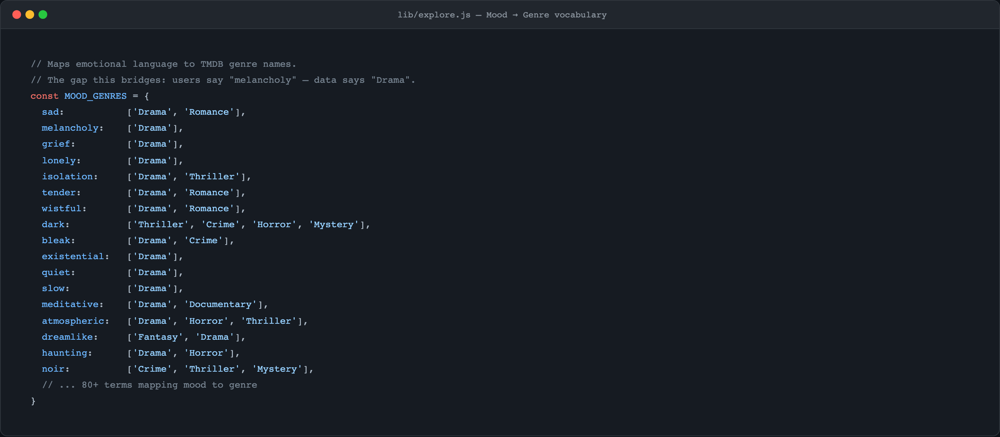
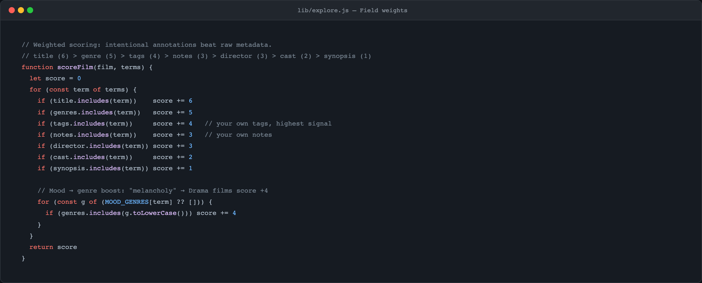
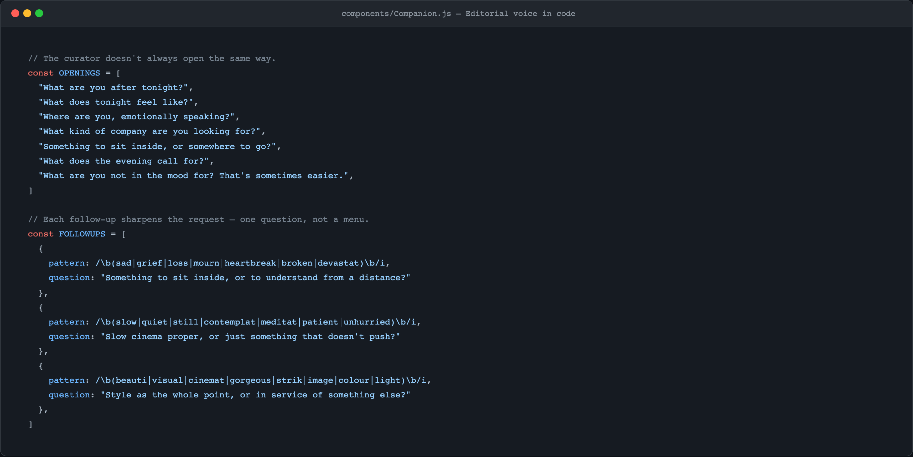

Personal project — 2026
A personal film library rebuilt from a Letterboxd export.
"I know what I like. I don't always know what I want to watch."
The question was never "how do we display films?" It was "what is the right relationship with this collection?"
A Letterboxd export is a flat CSV — title, URI, date added, rating. That's it.
Every entry was enriched via TMDB: backdrop, poster, synopsis, director, cast, streaming. The schema also carries a personal layer — notes and tags that feed back into search.
That transforms a spreadsheet into a library.

Xanh Mono for display — monospaced, editorial, precise. Not consumer. Work Sans 300 for body — light and unobtrusive.
Near-black, neutrals. Films as objects, not content. Full-bleed backdrops at low opacity — atmosphere before information.
"Tonight's suggestion" not "Featured." "A moment." not "Loading…" The copy is curatorial throughout.
Filter by genre, decade, runtime, streaming. "Tonight's suggestion" — a random pick, resets on refresh. Serendipity as a feature, not an afterthought.
Watched indicator: a single pixel-thin line at the top of the poster card. Minimal — enough.

Full-bleed backdrop at low opacity. Personal notes field — free text, for your own references and observations. Custom tags: mood labels, visual references, anything.
The annotations feed back into search. The more you write, the sharper the library gets.

First version: a search box. Problem: search is transactional — it assumes you know what you want.
The insight: most of the time you know how you feel, not what you want. So the interface needed to meet you there.
Decision: make it conversational. Two steps — mood, then sharpener. The follow-up questions pattern-match emotional vocabulary and ask one precise question back.

In-memory keyword scoring, runs in under 5ms. The key decision: a hand-built table maps emotional language to genres. "Melancholy" → Drama. "Noir" → Crime, Thriller, Mystery.
Why not an LLM? Latency felt wrong for something meant to feel immediate. Being explicit about the vocabulary is also more honest — you can see exactly what the system knows about your taste.


The opening questions rotate. The follow-ups don't offer a menu — they ask one more precise question. The copy was written before the code.
"Something to sit inside, or to understand from a distance?"
"Slow cinema proper, or just something that doesn't push?"

| Decision | First version | Why it changed |
|---|---|---|
| Hero framing | Featured film | "Tonight's suggestion" — editorial framing changes the relationship with the content |
| Discovery | Search box | The Companion — search assumes prior knowledge you often don't have at 11pm |
| Mood → genre | Direct genre filter only | MOOD_GENRES vocabulary — bridges how you think to how data is tagged |
| Search engine | Explored Claude API | Latency + cost felt wrong; hand-built vocabulary is more immediate and honest |
| Watched marker | Badge / icon overlay | 1px top border — present enough to register, absent enough not to dominate |